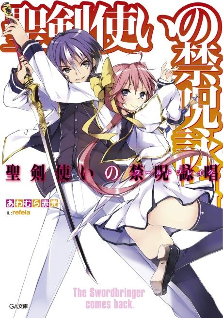

World Break: Aria of Curse for a Holy Swordsman
聖剣使いの禁呪詠唱＜ワールドブレイク＞
Moroha, a student with memories of two past lives, enrols at a school for saviours who fight monsters.
We haven't found where the anime ends in the light novel yet.
6.3AniList score
—Animeter, no votes yet
12episodes
Rate it or report where you stopped
Anime finished. Where does the story go next?
StatusNo source yet
We looked for where the anime ends in the light novel but found no source we trust yet. The light novel is 171 chapters, finished.
More like World Break: Aria of Curse for a Holy Swordsman
 Manga Vol. 56.0
Manga Vol. 56.0
 Manga Vol. 206.8
Manga Vol. 206.8
 Manga Vol. 47.2
Manga Vol. 47.2
 Unclear7.4
Unclear7.4
 Unclear5.9
Unclear5.9
 Unclear6.4
Unclear6.4
 Manga Vol. 46.2
Manga Vol. 46.2
 Unclear6.9
Unclear6.9
 Unclear5.8
Unclear5.8
 Manga Vol. 76.5
Manga Vol. 76.5
 Manga Vol. 46.4
Manga Vol. 46.4
 Unclear6.3
Unclear6.3